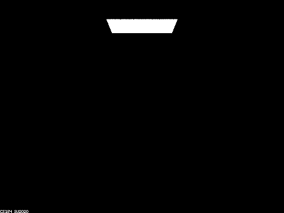
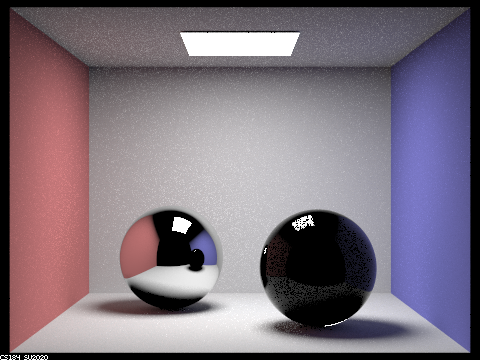

Part 1. Mirror and Glass Materials
|

|
When max_ray_depth = 0, there are only zero bounce radiance, which is the radiance directly emitted from the light source.

|
Due to one bounce radiance, we could see the light which is reflected by the spheres as well as most part of the background. However, since only one bounce is allowed, there are neither refraction effect nor reflection from other objects, so the most part of spheres remains black.
|

|
First we notice that the ceiling is lightened up. Because it is parallel to the light source, it requires at least two bounce for the light ray to hit the ceiling and arrive at the camera. Then, since two bounce radiance is introduced, we could trace the ray which first hit the wall and then reflected by the sphere, so we could see the reflection of the scene on the sphere on the left. However, for the same reason as above, the reflection of the ceiling remains black. For the sphere on the right, we can speculate that its material is mostly refractive, so we need more than two bounces to see though the shpere, however, we can still see minor reflection on it.

|
We can see the reflection of the ceiling has color now, this is because we are now able to trace rays that come from the ceiling and reflected by the shpere, which is a three-bounce ray. For the shpere on the right, we can see the wall through it now, because we are now able to trace three-bounce ray which first hit the wall and then go through the shpere via two refraction. In addition, we can also see the light which directly pass through the sphere, instead of the whole black shadow.
|
|
The most conspicuous change is that the reflection of the right sphere in the left sphere is glassy now, rather than completely dark in the previous image. This is because we are now able to trace rays which first hit the right wall, passing through the right sphere and eventually reflected by the left sphere, and this is also the reason why the reflection of the right sphere looks blue. We can also see the right shpere rafracts the light on the wall next to it.

|
The scene looks brighter.

|
The scene looks brighter. More light are refracted by the right shpere rather than being reflected, so the reflection of the light on the right shpere looks more blurred.
Part 2. Microfacet Material
Show a screenshot sequence of 4 images of scene `CBdragon_microfacet_au.dae` rendered with $\alpha$ set to 0.005, 0.05, 0.25 and 0.5. The other settings should be at least 128 samples per pixel and 1 samples per light. The number of bounces should be at least 5. Describe the differences between different images. Note that, to change the $\alpha$, just open the .dae file and search for `microfacet`.
Your response goes here.
Show two images of scene `CBbunny_microfacet_cu.dae` rendered using cosine hemisphere sampling (default) and your importance sampling. The sampling rate should be fixed at 64 samples per pixel and 1 samples per light. The number of bounces should be at least 5. Briefly discuss their difference.
Your response goes here.
Show at least one image with some other conductor material, replacing `eta` and `k`. Note that you should look up values for real data rather than modifying them arbitrarily. Tell us what kind of material your parameters correspond to.
Your response goes here.
Part 3. Environment Lightl
Pick one *.exr* file to use for all subparts here. Include a converted *.jpg* of it in your website so we know what map you are using.In a few sentences, explain the ideas behind environment lighting (i.e. why we do it/how it works).
Your response goes here.
Show the *probability_debug.png* file for the *.exr* file you are using, generated using the `save_probability_debug()` helper function after initializing your probability distributions.
Your response goes here.
Use the `bunny_unlit.dae` scene and your environment map *.exr* file and render two pictures, one with uniform sampling and one with importance sampling. Use 4 samples per pixel and 64 samples per light in each. Compare noise levels. Make sure to include all screenshots.
Your response goes here.
Use a different image (if you did part 2, we recommend `bunny_microfacet_cu_unlit.dae`) and your environment map *.exr* file and render two pictures, one with uniform sampling and one with importance sampling. Use 4 samples per pixel and 64 samples per light in each. Compare noise levels. Make sure to include all screenshots.
Your response goes here.
Part 4. Depth of Field
For these subparts, we recommend using a microfacet BSDF scene to show off the cool out of focus effects you can get with depth of field!In a few sentences, explain the differences between a pinhole camera model and a thin-lens camera model.
Your response goes here.
Show a "focus stack" where you focus at 4 visibly different depths through a scene. Make sure to include all screenshots.
Your response goes here.
Show a sequence of 4 pictures with visibly different aperture sizes, all focused at the same point in a scene. Make sure to include all screenshots.
Your response goes here.